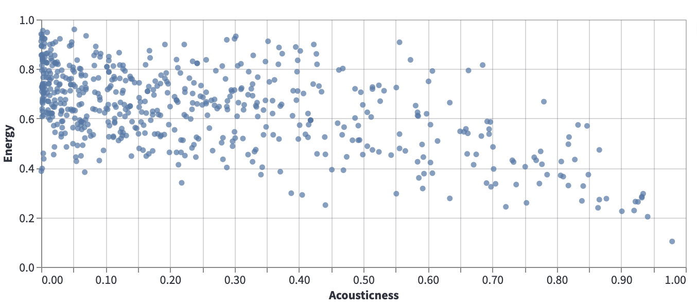

Introduction to Machine Learning
Contents
Introduction to Machine Learning¶
We give a brief introduction to machine learning, and to some of the most commonly used terms in the subject.
Two recommended references, both freely available from on campus or using VPN:
Introduction to Statistical Learning, by James, Witten, Hastie, and Tibshirani. Available from SpringerLink.
Hands-On Machine Learning with Scikit-Learn, Keras, and TensorFlow, 2nd Edition, by Aurélien Géron. Available from O’Reilly.
A definition of Machine Learning¶
To define machine learning, we will use this quote from Hands-On Machine Learning:
Machine Learning is the science (and art) of programming computers so they can learn from data.
The reason for the word learning is that, as more data is provided, the algorithm can update (and hopefully become more accurate). This updating is what is meant by learning.
Supervised vs unsupervised learning¶
There are two basic categories of machine learning: supervised learning and unsupervised learning. In supervised learning, there is some specific quantity (or label) that is trying to be assigned, while in unsupervised learning, there isn’t. The reason for the names is that, with supervised learning, the algorithm is trained using labeled data. The algorithm receives supervision in the form of correct answers for some of the data. An algorithm for unsupervised learning will also receive data, but it is unlabeled data.
The most fundamental example of supervised learning is linear regression. With regards to linear regression, we are provided with one or more input variables \(X\), which are traditionally called predictors, and an output variable \(y\), called the target, and we try to model the target as a linear (plus a constant) function of the input variables.
The most famous example of unsupervised learning is clustering, where we feed in data and the algorithm is supposed to divide that data into different clusters. We do not provide any initial labels (for example, we don’t say something like, “these points should be in cluster 1, while these others should be in cluster 2”). That is the sense in which this would be an unsupervised learning algorithm.
In Winter 2022 Math 10, I believe we will cover supervised learning algorithms and not any unsupervised learning algorithms.
Regression vs classification¶
Within the supervised learning category, there is a further important distinction between regression problems and classification problems. In a regression problem, the target is assumed to be some continuous quantitative value. (Even if the target is something like “number of deaths”, I would still count that as a regression problem. It might not be continuous in the sense that there can never be a fractional death, but there is still a clear ordering and if our model outputs something like 100.4 deaths, that is natural enough to interpret.)
In a classification problem, the target is assumed to take values in some discrete set of categories. For example, if we are trying to predict the musical genre of a song, this would be thought of as a classification problem.
Cost functions (or loss functions)¶
In our supervised machine learning examples, we will usually choose a type of model (like a linear function), and then we will use scikit-learn to estimate the parameters for that model. scikit-learn will attempt to find the parameters that minimize a cost function, which measures the performance of the model, with higher values being worse. (I use the terms cost function and loss function interchangeably.)
Here is an example of a cost function in the context of linear regression.
Single variable linear regression¶
Consider the following data from our usual Spotify dataset, which shows Acousticness vs Energy.

Certainly there is no line that perfectly models this data, but it can still be valuable to search for a line that approximates the relationship illustrated by this scatter-plot. For example, if we can approximate this data using a \(y = mx + b\) line, then if \(m\) is negative, that tells us that in general, as acousticness increases, the energy tends to decrease.
The question then becomes, how to find a line that does a good job of approximating the data. Given two lines, how do we decide which of the lines better approximates the data? We decide this by defining a cost function (or loss function). The cost function provides a measure of how well a given line approximates the data. The smaller the cost function, the better the approximation, with a cost function value of 0 typically representing a perfect fit.
A cost function for single variable linear regression¶
Let \(m\) denote the number of data points, and let \((x^{(i)}, y^{(i)})\) denote the \(i\)-th data point. (We do not use subscripts here because they will serve a different purpose in multi-variable linear regression.) Let \(y = \theta_0 + \theta_1 x\) denote a linear (degree one) equation, and we want to measure how well this line fits the data. We define the Mean Squared Error (MSE) cost function by
This cost function represents the average value of the squares of the vertical distances between the data points and the line.
If the cost function were to equal zero, that would mean that every data point lies on the line.
Another common choice is the Mean Absolute Error (MAE) cost function, defined by
The “best” line¶
It turns out there is a “best” linear approximation to the data, in the sense that there is a line for which the Mean Squared Error cost function is minimized. (In rare cases there might be more than one best line, where the best lines all produce the same value of \(J\).)
(I expect there is also a best line with respect to the Mean Absolute Error, but I haven’t thought of how to justify this.)
In the Fall 2021 version of Math 10, I spent a lot of time trying to explain the formula for the best line, but such formulas don’t exist for more complicated machine learning models, so I think I will skip that this quarter.
Setup for multi-variable linear regression¶
There is also a version of linear regression for more than one input variable. Here is the setup for \(n\) input variables.
For \(i = 1, 2, \ldots, m\), we have an input \(\vec{x}^{\,(i)} \in \mathbb{R}^{n}\) and an output \(y^{(i)} \in \mathbb{R}\).
Given elements \(\theta_0, \theta_1, \ldots, \theta_n \in \mathbb{R}\), we get a corresponding map \(\mathbb{R}^n \rightarrow \mathbb{R}\) given by
We want to find the values of \(\theta_i\) which best model \(\vec{x}^{\,(i)} \leadsto y^{(i)}\).
By “best”, we mean the loss function is as small as possible, where for example the Mean Squared Error loss function is given by